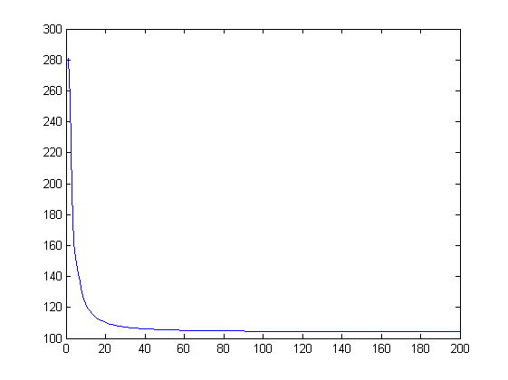

clc;
clear all;
close all;
load('Pattern1.mat');
load('Pattern2.mat');
load('Pattern3.mat');
load('Test1.mat');
load('Test2.mat');
load('Test3.mat');
for i=1:200
train_pattern_1{:,i} = train_pattern_1{:,i}';
train_pattern_2{:,i} = train_pattern_2{:,i}';
train_pattern_3{:,i} = train_pattern_3{:,i}';
end
for i=1:100
test_pattern_1{:,i} = test_pattern_1{:,i}';
test_pattern_2{:,i} = test_pattern_2{:,i}';
test_pattern_3{:,i} = test_pattern_3{:,i}';
end
Pattern1=cell2mat(train_pattern_1)';
Pattern2=cell2mat(train_pattern_2)';
Pattern3=cell2mat(train_pattern_3)';
Test1=cell2mat(test_pattern_1)';
Test2=cell2mat(test_pattern_2)';
Test3=cell2mat(test_pattern_3)';
Pattern=[Pattern1' Pattern2' Pattern3'];
Test=[Test1' Test2' Test3'];
Pattern_mean=mean(Pattern,2);
for i=1:600
Pattern(:,i)=Pattern(:,i)-Pattern_mean;
end
for i=1:300
Test(:,i)=Test(:,i)-Pattern_mean;
end
for i=1:120
CovMat=cov(Pattern');
variance(i,1)=CovMat(i,i);
end
for i=1:600
Pattern(:,i)=1./sqrt(variance).*Pattern(:,i);
end
for i=1:300
Test(:,i)=1./sqrt(variance).*Test(:,i);
end
Pattern=[ones(1,600);Pattern];
wts1=10*rand(121,20);
wts2=10*rand(21,3);
errfn=zeros(200,1);
for l=1:200
a=(Pattern')*wts1;
z=[ones(600,1) 1./(1+exp(-a))];
y=z*wts2;
s=zeros(600,1);
for j=1:600
y(j,:)=exp(y(j,:));
s(j)=sum(y(j,:));
end
delta1=zeros(600,3);
errfn(l)=0;
for j=1:600
if(j<=200)
target=[1 0 0];
end
if((j>200)&&(j<=400))
target=[0 1 0];
end
if(j>400)
target=[0 0 1];
end
delta1(j,:)=((y(j,:)/s(j))-target);
delta1(j,1)=delta1(j,1)*(s(j)-y(j,1))*y(j,1)/((s(j))^2);
delta1(j,2)=delta1(j,2)*(s(j)-y(j,2))*y(j,2)/((s(j))^2);
delta1(j,3)=delta1(j,3)*(s(j)-y(j,3))*y(j,3)/((s(j))^2);
errfn(l)=errfn(l)+(0.5)*norm((y(j,:)/s(j))-target);
end
delta2=zeros(600,20);
for j=1:600
for k=1:20
delta2(j,k)=z(j,k+1)*(1-z(j,k+1));
delta2(j,k)=delta2(j,k)*(wts2(k+1,:)*(delta1(j,:)'));
end
end
g1=zeros(size(wts1));
g2=zeros(size(wts2));
for j=1:121
for k=1:20
g1(j,k)=Pattern(j,:)*delta2(:,k);
end
end
for j=1:21
for k=1:3
g2(j,k)=(z(:,j)')*delta1(:,k);
end
end
for j=1:20
wts1(:,j)=wts1(:,j)/norm(wts1(:,j));
g1(:,j)=g1(:,j)/norm(g1(:,j));
end
for j=1:3
wts2(:,j)=wts2(:,j)/norm(wts2(:,j));
g2(:,j)=g2(:,j)/norm(g2(:,j));
end
wts1=wts1-(1/(l^1.2))*g1;
wts2=wts2-(1/(l^1.2))*g2;
end
plot(errfn);
Test=[ones(1,300);Test];
a_test=(Test')*wts1;
z_test=[ones(300,1) 1./(1+exp(-a_test))];
y_test=z_test*wts2;
for j=1:300
y_test(j,:)=exp(y_test(j,:));
t=sum(y_test(j,:));
y_test(j,:)=y_test(j,:)/t;
end
perf=zeros(300,1);
for j=1:300
perf(j)=max(y_test(j,:));
perf(j)=find(y_test(j,:)==perf(j));
end
nnz(perf(1:100)==1)
nnz(perf(101:200)==2)
nnz(perf(201:300)==3)
ans =
88
ans =
83
ans =
100
